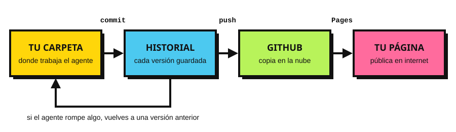

VS Code, Git y GitHub: la red de seguridad.
El agente se va a equivocar. La pregunta es si pueden deshacerlo.

claude. Menú Terminal → Nueva terminal.mananeras y ábranla en VS Code (Archivo → Abrir carpeta).claude y pídanle: «inicializa un repositorio de Git aquí y haz el primer commit».Claude Code también guarda puntos de control propios: Esc dos veces para volver atrás en la conversación.
Commit antes de cada encargo grande.
Si algo sale mal, siempre hay a dónde regresar.